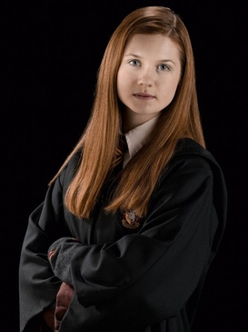

-

Harry Potter
Harry James Potter is a fictional character in the Harry Potter series of novels by J. K. Rowling. The plot of the seven-book series chronicles seven years in the life of the orphan Harry, who, on his eleventh birthday, learns he is a wizard. He attends Hogwarts, a school of magic, where he receives guidance from the headmaster Albus Dumbledore and becomes friends with Ron Weasley and Hermione Granger. Harry learns that during his infancy, the Dark wizard Lord Voldemort murdered his parents but was unable to kill him as well. The plot of the series revolves around Harry's struggle to adapt to the wizarding world and defeat Voldemort.
-

Ronald Weasley
Ronald Bilius Weasley is a fictional character in the Harry Potter series of novels by J. K. Rowling. He is introduced in Harry Potter and the Philosopher's Stone as a first-year student on his way to the wizarding school Hogwarts. During the school year, Ron befriends Harry Potter and Hermione Granger. Being the only member of the trio who was raised in wizarding society, he provides insight into wizarding customs and traditions. Along with Harry and Hermione, he is a member of Gryffindor House at Hogwarts and is present for most of the action throughout the series.
-

Hermione Granger
Rowling has described Hermione as a strong female character who is bright, logical, upright and good. Rowling was seen as a "know-it-all" in her youth, and she said Hermione is an exaggerated version of her younger self. She added that beneath Hermione's studious exterior, she is insecure and afraid of failure, traits which are inspired by Rowling's own youthful insecurity. According to Rowling, Hermione is the perfect expository character due to her encyclopaedic knowledge of the wizarding world.
-

Lord Voldemort
Voldemort, an anagrammatic sobriquet for his birth name Tom Marvolo Riddle, is the archenemy of Harry Potter, who according to a prophecy has "the power to vanquish the Dark Lord". After killing Harry's parents, Lily and James Potter, he attempts to murder the boy, but instead leaves him with a scar on his forehead in the shape of a lightning bolt. Nearly every witch or wizard dares not utter his name and refers to him instead with such monikers as "You-Know-Who", "He-Who-Must-Not-Be-Named", or "The Dark Lord". Voldemort's obsession with blood purity signifies his aim to rid the wizarding world of Muggle (non-magical) heritage and to conquer both worlds, Muggle and wizarding, to achieve pure-blood dominance.
-

Ginny Weasley
Ginevra Molly "Ginny" Weasley is a fictional character in the Harry Potter series of novels by J.K. Rowling. She is introduced in the first novel, Harry Potter and the Philosopher's Stone, as the youngest child and only daughter of Arthur and Molly Weasley. She becomes romantically involved with Harry Potter and eventually marries him. Ginny is portrayed by Bonnie Wright in all eight Harry Potter films.